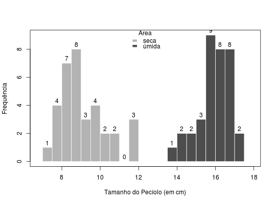

Em um estudo do comportamento de uma planta típica de dunas, a Hydrocotille sp, quanto ao seu desenvolvimento, mediu-se o tamanho do pecíolo, em centímetros, em duas áreas: seca e úmida. Selecionou-se de cada uma dessas áreas amostras aleatórias de plantas e mediu-se o tamanho dos pecíolos.
Um data.frame com 69 observações e 2 variáveis, em que
areatamanhoAndrade, D. F., Ogliari, P. J. (2010). Estatística para as ciências agrárias e biológicas com noções de experimentação (2nd ed.). Florianópolis, SC. Editora da UFSC. (Tabela 2.45, pág. 148)
data(AndradeTb2.45) str(AndradeTb2.45)#> 'data.frame': 69 obs. of 2 variables: #> $ area : Factor w/ 2 levels "seca","úmida": 2 2 2 2 2 2 2 2 2 2 ... #> $ tamanho: num 13.8 14.3 14.5 15 15 15.5 15.5 15.5 15.6 15.6 ...# Medidas resumo para cada área with(AndradeTb2.45, tapply(tamanho, area, summary))#> $seca #> Min. 1st Qu. Median Mean 3rd Qu. Max. #> 7.300 8.325 9.000 9.171 9.750 12.000 #> #> $úmida #> Min. 1st Qu. Median Mean 3rd Qu. Max. #> 13.80 15.60 16.10 16.02 16.60 17.40 #># Histogramas sobrepostos hts <- with(AndradeTb2.45, tapply(tamanho, area, hist, plot = FALSE)) plot(0, 0, type = "n", xlim = extendrange(AndradeTb2.45$tamanho), ylim = range(sapply(hts, function(h) range(h$counts))), xlab = "Tamanho do Pecíolo (em cm)", ylab = "Frequência")cols <- c("gray70", "gray30") lapply(1:length(hts), function(i) { plot(hts[[i]], add = TRUE, col = cols[i], labels = TRUE, border = "white") })#> [[1]] #> NULL #> #> [[2]] #> NULL #>legend("top", title = "Área", legend = names(hts), fill = cols, bty = "n", border = "white")